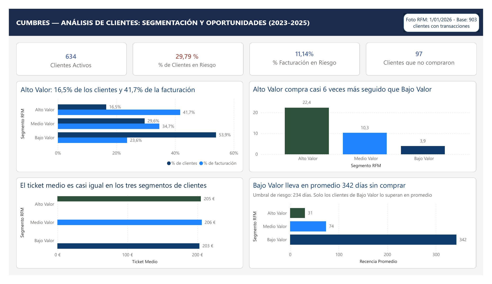

Datos sintéticos
Customer Analytics · Cumbres Outdoor & Deportes
Análisis de clientes de un retailer deportivo ficticio, con datos sintéticos del período 2023-2025.
Pregunta de negocio¿Cómo se distribuye el valor de la cartera de clientes y a qué clientes inactivos conviene contactar primero?
Hallazgo clave81 de los 269 clientes en riesgo concentran el 62,7% de la facturación histórica en riesgo.
Ver proyecto